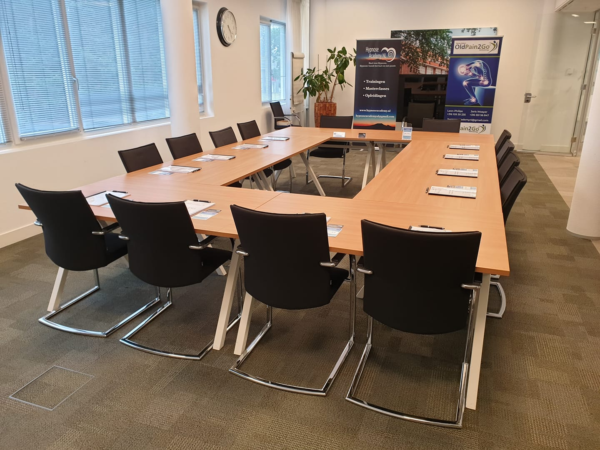
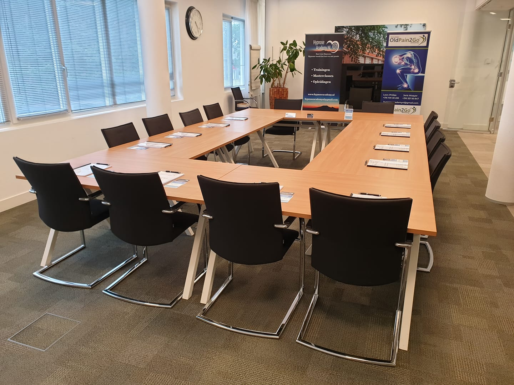

- Hypnose Academy NL
- Copyright/ eigendomsrechten
- Restitutiebeleid en annuleringsvoorwaarden
- Klachten
- Privacybeleid
Hypnose Academy NL
Leon Philips is eigenaar van Hypnose Academy NL en Hypnose Praktijk Philips . Deze tweee bedrijven staan bij de kamer van koophandel ingeschreven als Leon Philips Coaching en training met kvk nummer 64178455.
- Docent Hypnose Academy NL
- Old Pain 2 GO Master Practitioner & Trainer
- Gediplomeerd Hypnotherapeut/ Hypnotiseur/ Coach
 

Copyright/ eigendomsrechten
Het aangeboden cursusmateriaal is uitsluitend bedoeld voor persoonlijk gebruik. Op alle door ondernemer verstrekte zaken, zoals boeken, proefexamens, readers en software rusten auteursrechten van de ondernemer of van derden. De in dit artikel bedoelde zaken mogen niet zonder nadrukkelijk voorafgaande toestemming van de ondernemer worden vermenigvuldigd, openbaar gemaakt en/of op andere wijze ter kennis van derden worden gebracht of aan derden worden verstrekt, zowel gedurende de looptijd van de opleiding als nadien. Het is ook niet toegestaan het materiaal in gewijzigde vorm openbaar te maken of onder eigen naam te gebruiken zonder schriftelijke toestemming van de ondernemer. De copyright/ eigendomsrechten op de cursus berusten volledig bij de ondernemer.
Restitutiebeleid en annuleringsvoorwaarden
- Tot 14 dagen voor aanvang van de training kunt u de training/ masterclass kosteloos omboeken naar een andere datum, of het lesgeld retour krijgen (exclusief inschrijfgeld).
- Wanneer u binnen 14 dagen voor het begin van de training annuleert, bent u wellicht het volledige deelnemersbedrag verschuldigd. Neem zo spoedig mogelijk contact met ons op, afhankelijk van de gemaakte kosten kunnen we bekijken welke restitutie mogelijk is.
- Bij onvoldoende aanmeldingen/ overmacht (o.a. Covid-19) houden wij ons het recht voor een training te annuleren. In dat geval informeren wij u minimaal 10 dagen van tevoren. In geval u dan de training wilt doorschuiven zijn daar uiteraard geen kosten aan verbonden of u kunt voor een 100% terugbetaling kiezen (inclusief inschrijfgeld).
- Boek geen hotels of reizen voordat u de bevestigingsmail voor het evenement heeft ontvangen ( uiterlijk 10 dagen voor aanvang van de training).
- Na het boeken van de training geldt een bedenktijd van 14 dagen, mits deze minimaal 4 weken voor aanvang van de training geboekt is. In deze bedenktijd kunt u zonder opgaaf van reden de training/ masterclass kosteloos annuleren.
Klachten
Wij doen ons uiterste best om onze trainingen/ masterclasses zo goed mogelijk voor te bereiden en uit te voeren. Indien er onverhoopt toch een klacht is willen wij deze zo snel en correct mogelijk behandelen met behulp van deze procedure. Klachten en de wijze van afhandeling worden vertrouwelijk behandeld en geregistreerd deze worden twaalf maanden lang bewaard.
Stap 1
Indien een cursist een klacht heeft over Hypnose Academy of ingehuurde trainer, zal dit in eerste instantie informeel besproken moeten worden. Bespreek dit met de trainer/ Leon Philips/ Famke Philips. Wij hopen dat de meerderheid van de problemen op deze manier kan worden opgelost.
Stap 2
Indien de cursist het gevoel heeft dat het probleem/ de klacht niet is opgelost door de informele bespreking, dient hij of zij de klacht schriftelijk naar hypnoseacademynl@gmail.com te sturen met als onderwerp klacht.
Stap 3
Binnen vier weken na ontvangst van de schriftelijke klacht zal Hypnose Academy NL in geschrift reageren. De cursist kan uitgenodigd worden om de klacht nader toe te lichten, dit kan zowel telefonisch als in een georganiseerde (online) vergadering. Na het telefoongesprek/ de vergadering zal Hypnose Academy NL de cursist binnen 10 werkdagen schriftelijk op de hoogte brengen van elke beslissing of ondernomen actie. Indien er langere tijd nodig is om onderzoek te doen, dan word je hiervan binnen de vastgestelde termijn van op de hoogte gebracht, waarbij het uitstel wordt toegelicht. Bovendien krijg je een indicatie wanneer wij met uitsluitsel kunnen komen.
Stap 4
Mochten wij ondanks zorgvuldigheid toch niet tot een oplossing komen dan kun je je klacht voorleggen bij "naam onafhankelijke derde". De uitspraak van "naam onafhankelijke derde" als onafhankelijke derde is voor Hypnose Academy NL bindend en eventuele consequenties worden door Hypnose Academy NL snel afgehandeld. Indien je als aanklager niet tevreden bent met de afhandeling van de onafhankelijke derde kunt je de klacht voorleggen bij een rechter.
Momenteel is de onafhankelijke derde nog niet bij naam genoemd, omdat wij nog geen contacten hebben met een onafhankelijke derde partij. Hopelijk is dit ook niet nodig, maar mocht het toch voorkomen en we hebben nog steeds geen contacten zullen wij met spoed opzoek gaan naar een onafhankelijke derde partij.
Privacybeleid Hypnose Academy NL
Versie 0.1 - Deze pagina is voor het laatst aangepast op 24/05/2018
Wij zijn er van bewust dat u vertrouwen stelt in ons. Wij zien het dan ook als onze verantwoordelijkheid om uw privacy te beschermen. Op deze pagina laten we u weten welke gegevens we verzamelen als u onze website gebruikt, waarom we deze gegevens verzamelen en hoe we hiermee uw gebruikservaring verbeteren. Zo snapt u precies hoe wij werken. Dit privacybeleid is van toepassing op de diensten van Hypnose Academy NL. U dient zich ervan bewust te zijn dat we niet verantwoordelijk is voor het privacybeleid van andere sites en bronnen. Door gebruik te maken van deze website geeft u aan het privacy beleid te accepteren. Hypnose Academy NL respecteert de privacy van alle gebruikers van haar site en draagt er zorg voor dat de persoonlijke informatie die u ons verschaft vertrouwelijk wordt behandeld.
Gebruik van onze diensten Wanneer u zich aanmeldt voor een van onze diensten vragen we u om persoonsgegevens te verstrekken. Deze gegevens worden gebruikt om de dienst uit te kunnen voeren. De gegevens worden opgeslagen op eigen beveiligde servers van Hypnose Academy NL of die van een derde partij. Wij zullen deze gegevens niet combineren met andere persoonlijke gegevens waarover wij beschikken.
Communicatie Wanneer u e-mail of andere berichten naar ons verzendt, is het mogelijk dat we die berichten bewaren. Soms vragen wij u naar uw persoonlijke gegevens die voor de desbetreffende situatie relevant zijn. Dit maakt het mogelijk uw vragen te verwerken en uw verzoeken te beantwoorden. De gegevens worden opgeslagen op eigen beveiligde servers van Hypnose Academy NL of die van een derde partij. Wij zullen deze gegevens niet combineren met andere persoonlijke gegevens waarover wij beschikken.
Cookies Wij verzamelen gegevens voor onderzoek om zo een beter inzicht te krijgen in onze klanten, zodat wij onze diensten hierop kunnen afstemmen. Deze website maakt gebruik van “cookies” (tekstbestandtjes die op uw computer worden geplaatst) om de website te helpen analyseren hoe gebruikers de site gebruiken. De door het cookie gegenereerde informatie over uw gebruik van de website kan worden overgebracht naar eigen beveiligde servers van Hypnose Academy NL of die van een derde partij. Wij gebruiken deze informatie om bij te houden hoe u de website gebruikt, om rapporten over de website-activiteit op te stellen en andere diensten aan te bieden met betrekking tot website-activiteit en internetgebruik. Uw IP-adres wordt wel gemaskeerd, er is een verwerkingsovereenkomst getekend met Google en er worden geen data doorgestuurd voor aanvullende Google-diensten.
Doeleinden We verzamelen of gebruiken geen informatie voor andere doeleinden dan de doeleinden die worden beschreven in dit privacybeleid tenzij we van tevoren uw toestemming hiervoor hebben verkregen.
Derden De informatie wordt niet met derden gedeeld. In enkele gevallen kan de informatie intern gedeeld worden. Onze werknemers zijn verplicht om de vertrouwelijkheid van uw gegevens te respecteren.
Veranderingen Deze privacyverklaring is afgestemd op het gebruik van en de mogelijkheden op deze site. Eventuele aanpassingen en/of veranderingen van deze site, kunnen leiden tot wijzigingen in deze privacyverklaring. Het is daarom raadzaam om regelmatig deze privacyverklaring te raadplegen.
Keuzes voor persoonsgegevens Wij bieden alle bezoekers de mogelijkheid tot het inzien, veranderen, of verwijderen van alle persoonlijke informatie die op moment aan ons is verstrekt.
Aanpassen/uitschrijven communicatie Als u uw gegevens aan wilt passen of uzelf uit onze bestanden wilt laten halen, kunt u contact met ons op nemen. Zie onderstaande contactgegevens.
Cookies uitzetten De meeste browsers zijn standaard ingesteld om cookies te accepteren, maar u kunt uw browser opnieuw instellen om alle cookies te weigeren of om aan te geven wanneer een cookie wordt verzonden. Het is echter mogelijk dat sommige functies en services, op onze en andere websites, niet correct functioneren als cookies zijn uitgeschakeld in uw browser.
Vragen en feedback Als u vragen heeft over dit privacybeleid, kunt u Contact met ons opnemen